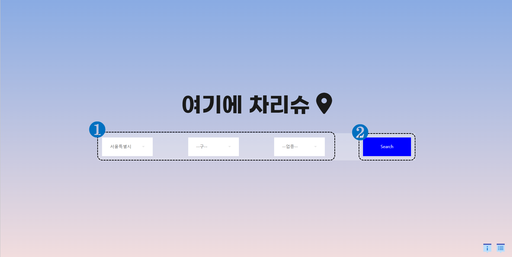
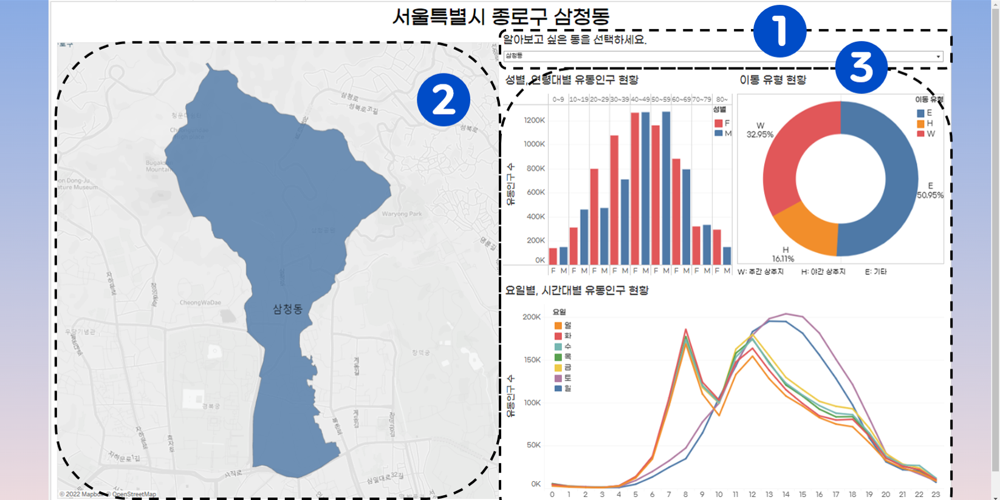

1. 서울 생활이동 인구 - 서울 열린데이터 광장
2. 서울시 주차장(동별) 통계 - 서울 열린데이터 광장
3. 서울시 버스정류소 위치 정보 - 서울 열린데이터 광장
4. 서울시 버스노선별 정류장 승하차 인원 정보 - 서울 열린데이터 광장
5. 서울시 지하철호선별 역별 승하차 인원 정보 - 서울 열린 데이터 광장
7. 서울시 주요 공원현황 - 서울 열린데이터 광장
8. 서울시 대학 및 전문대학 DB 정보 - 서울 열린데이터 광장
9. 서울시 주요 공원현황 - 서울 열린데이터 광장
10. 서울시 문화공간 정보 - 서울 열린데이터 광장
11. 서울시 구/동명 - KaKao API

